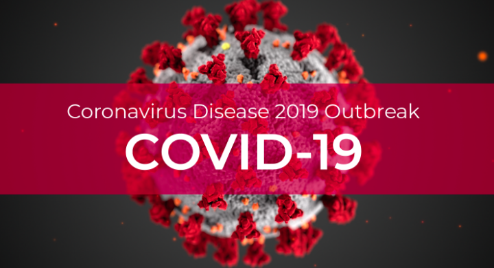
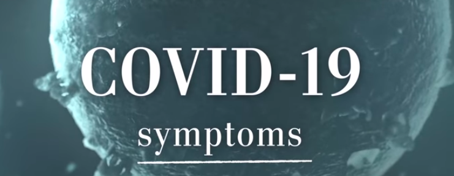
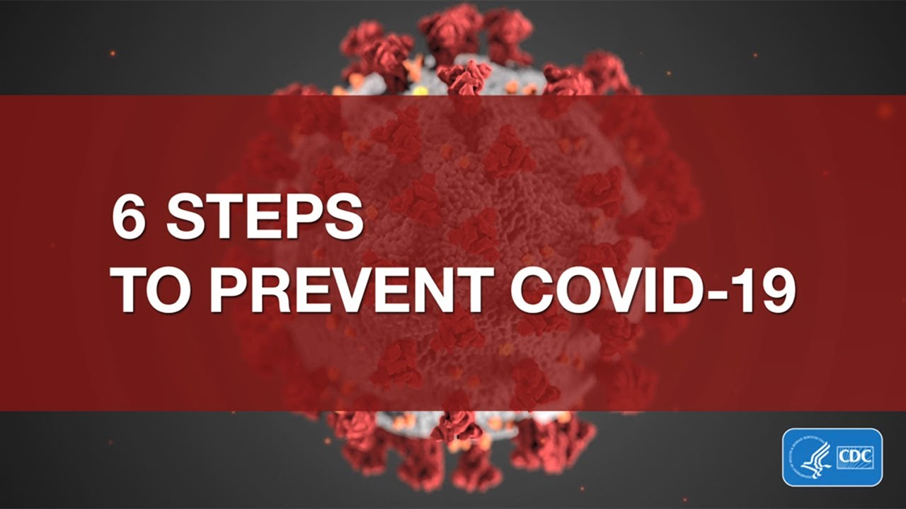
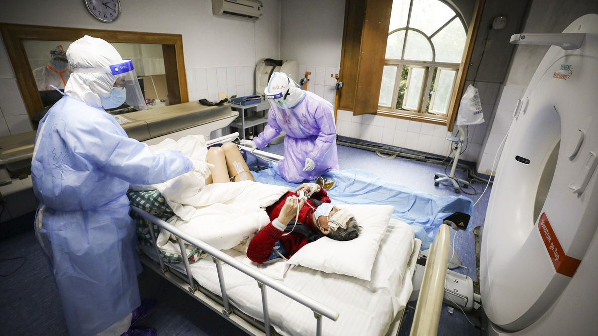
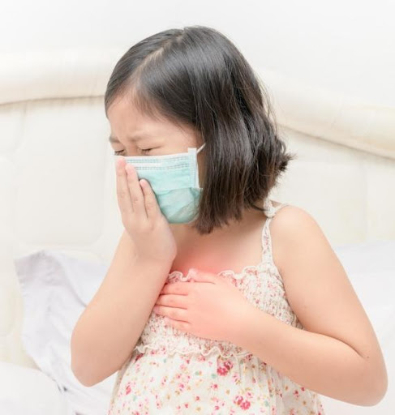

COVID-19
What is COVID-19 ?
Coronavirus disease (COVID-19) is an infectious disease caused by a newly discovered coronavirus. Most people infected with the COVID-19 virus will experience mild to moderate respiratory illness and recover without requiring special treatment. Older people, and those with underlying medical problems like cardiovascular disease, diabetes, chronic respiratory disease, and cancer are more likely to develop serious illness.
What are it's Symptomps?
The COVID-19 virus affects different people in different ways. COVID-19 is a respiratory disease and most infected people will develop mild to moderate symptoms and recover without requiring special treatment. People who have underlying medical conditions and those over 60 years old have a higher risk of developing severe disease and death.
Common symptoms include:
* fever
* tiredness
* dry cough.
Other symptoms include:
* shortness of breath
* aches and pains
* sore throat
very few people will report diarrhoea, nausea or a runny nose.
People with mild symptoms who are otherwise healthy should self-isolate and contact their medical provider or a COVID-19 information line for advice on testing and referral. People with fever, cough or difficulty breathing should call their doctor and seek medical attention..
How it is Transmitted?
Person-to-person spread
The virus is thought to spread mainly from person-to-person. Between people who are in close contact with one another (within about 6 feet).Through respiratory droplets produced when an infected person coughs or sneezes.
These droplets can land in the mouths or noses of people who are nearby or possibly be inhaled into the lungs.
Spread from contact with contaminated surfaces or objects
It may be possible that a person can get COVID-19 by touching a surface or object that has the virus on it and then touching their own mouth, nose, or possibly their eyes, but this is not thought to be the main way the virus spreads.How to Prevent ?
To prevent infection and to slow transmission of COVID-19, do the following:
* Wash your hands regularly with soap and water, or clean them with alcohol-based hand rub.
* Maintain at least 1 metre distance between you and people coughing or sneezing.
* Avoid touching your face.
* Cover your mouth and nose when coughing or sneezing.
* Stay home if you feel unwell.
* Practice physical distancing by avoiding unnecessary travel and staying away from large groups of people.
What Treatment is given to COVID-19 patients?
Vaccines and treatment options for COVID-19 are currently being investigated around the world. There’s some evidence that certain medications may have the potential to be effective with regard to preventing illness or treating the symptoms of COVID-19.
Remdesivir
Remdesivir is an experimental broad-spectrum antiviral drug originally designed to target Ebola.Researchers have found that remdesivir is highly effective at fighting the novel coronavirus in isolated cellsTrusted Source.
Chloroquine
Chloroquine is a drug that’s used to fight malaria and autoimmune diseases. It’s been in use for more than 70 yearsTrusted Source and is considered safe.Researchers have discovered that this drug is effective at fighting the SARS-CoV-2 virus in studies done in test tubes.
Lopinavir and ritonavir
Lopinavir and ritonavir are sold under the name Kaletra and are designed to treat HIV.In South Korea, a 54-year-old man was given a combination of these two drugs and had a significant reductionTrusted Source in his levels of the coronavirus
APN01
A clinical trial is set to start soon in China to examine the potential of a drug called APN01 to fight the novel coronavirus.Favilavir
China has approved the use of the antiviral drug favilavir to treat symptoms of COVID-19. The drug was initially developed to treat inflammation in the nose and throat.What to do if you are sick ?

1. Stay Home and Call a Health Care Provider
Unless it is an emergency, to reduce your risk of catching or spreading illness, stay home if you feel sick, even if your symptoms are mild. Do not go to work, school or public places, and avoid public transportation. If your symptoms are severe or you feel like you need medical care, call before you go to a doctor’s office, urgent care center or emergency room. Describe your symptoms over the phone.2. Answer Questions to Determine Your Risk
When you call a health care facility, you will be asked about your risks for COVID-19. Risk factors include recent travel to certain countries or areas of the U.S., or exposure to an infected person.3. Follow Your Health Care Provider’s Instructions
Based on your answers to these questions, the care provider will provide instructions over the phone. You will be told if you need to be evaluated, and if so, what to do next. Based on your risk for COVID-19, your health care provider may recommend that to you4. Practice Hand Hygiene and Respiratory Etiquette
* Wash your hands: You don't want to be the person with dirty, clammy, or sticky hands. Also, washing your hands regularly is one of most effective ways of preventing illness.* Cover your mouth and nose when coughing or sneezing: The people around you will thank you for it.
* Shower: Shower every day or coming from outside.
I hope this information will make you aware about COVID-19.
Best things to do:
1. Stay Home.
2. Stay Safe.
3. Keep Distaance up to 5ft if you are outside.
4. Social Distancing.
5. Self Isolation.
And important is go outside only if its Imergency